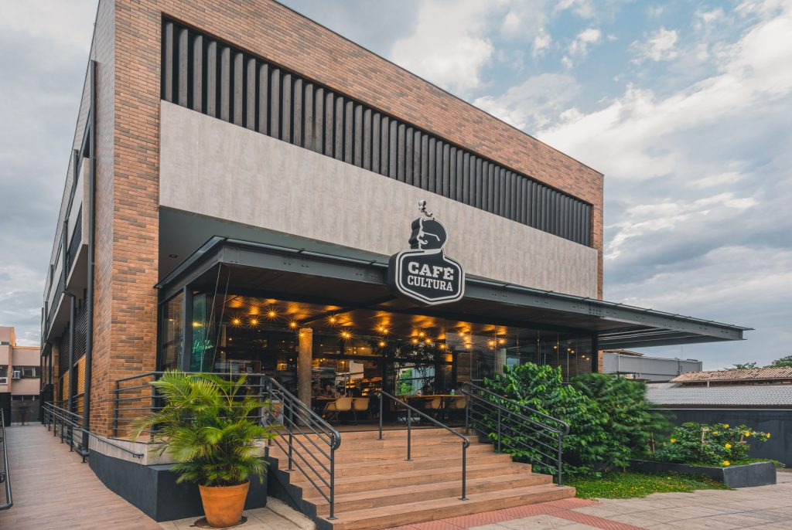

Café Cultura
Bem Vindo ao Café Cultura.
Aqui você pode encontrar informações sobre alguns dos melhores cafés do Brasil, onde você pode relaxar e desfrutar de um bom café em um ótimo ambiente..
A Casa Café Cultura
A casa do café cultura é um espaço cheio de estilo onde pode desfrutar de um bom café da tarde acompanhado de uma comida deliciosa. Eles têm vários tipos de café, incluindo Fairtrade e uma ampla seleção de algumas especialidades da "Caravan Coffee Roasters". Este lugar tem uma vibração incrível e decoração retrô.
Contato
Endereço: Av. das Américas, 3900 – Barra da Tijuca, Rio de Janeiro – RJ, 22640-102
Telefone:(21) 97626 5726